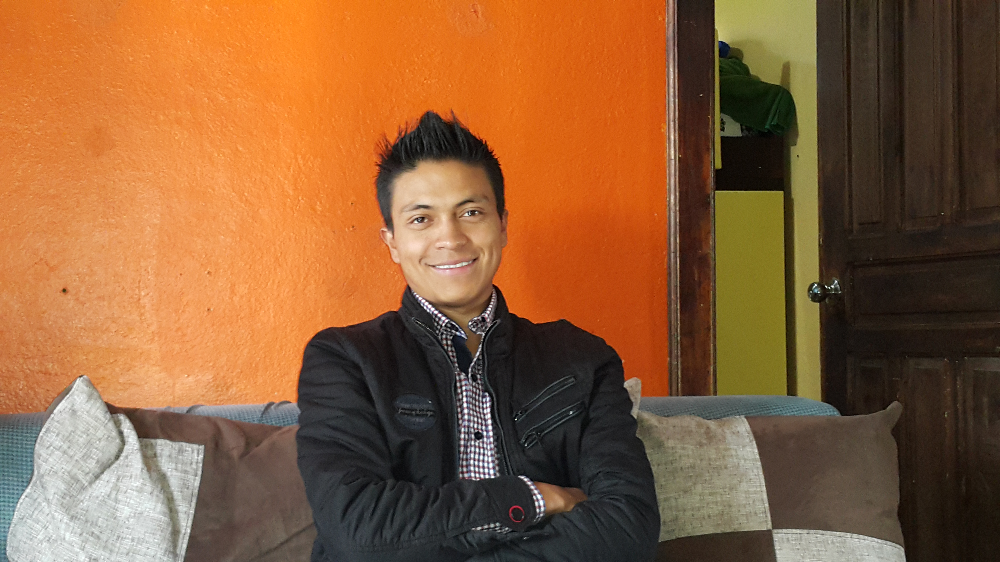

Información Personal:
Soy Michael Acosta, egresado de la carrera de Tecnología en Electrónica y Telecomunicaciones de la ESCUELA POLITECNICA NACIONAL, y estoy cursando la carrera de Ingeniería Informática en la UNIVERSIDAD TÉCNICA PARTICULAR DE LOJA. Además tengo experiencia en el área de docencia en ciencias exactas como profesor de Física en unidades educativas, dando clases de teoría y laboratorio. He terminado los niveles de suficiencia y proficiencia en el idioma Inglés en el CEC-EPN, y cuento con los cursos de Autocad 3D y CISCO Nivel1 CCNA registrados en la EPN.
Estoy apto para ejercer cualquier tipo de labor técnica y poseo una gran habilidad para aprender rápido y trabajar en equipo.
- Idiomas:
- English:
- writing:100%
- listening: 70%
- speaking:70%